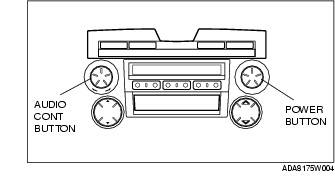

1. Start the on-board diagnostic test mode.
2. First press the POWER button, then simultaneously press the AUDIO CONT button for 2 s or more.

3. To stop the on-board diagnostic test mode, turn the ignition switch to the LOCK position.